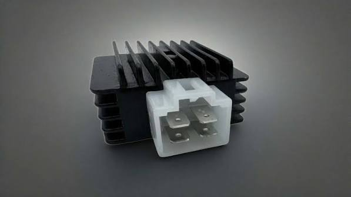
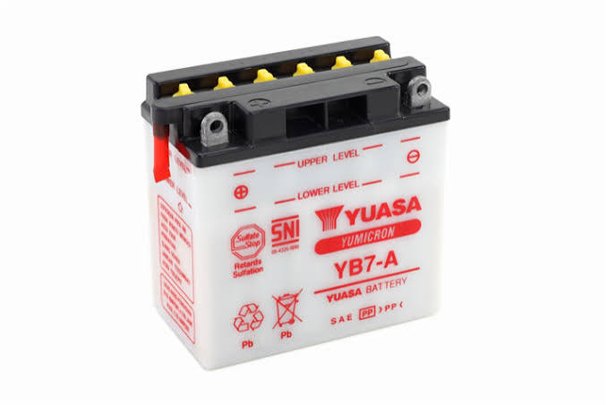

Mengapa harus ada sistem pengisian pada kendaraan sepeda motor ? perhatikan analogi berikut ini
⚡ Menghasilkan energi listrik
Alternator atau spul menghasilkan energi listrik dari putaran mesin.
🔋 Mengisi baterai
Energi listrik digunakan untuk mengisi kembali baterai.
💡 Menyuplai beban
Sistem pengisian membantu menyediakan energi listrik bagi beban kelistrikan ketika mesin bekerja.
Gambar Rangkaian Sistem Pengisian
⚙️ Putaran Mesin
→
⚡ Spul / Alternator
→
🔄 Regulator / Rectifier
→
🔋 Baterai
→
💡 Beban
Alur kerja: putaran mesin menggerakkan alternator, listrik diatur/diteruskan oleh regulator-rectifier, kemudian digunakan untuk pengisian baterai dan kebutuhan beban kelistrikan.
🔎 Eksplorasi Rangkaian Klik tombol komponen untuk melihat fungsi.
Pilih komponen. Penjelasan fungsi akan muncul di sini.
Komponen Sistem Pengisian
Spul Magnet / Alternator
Menghasilkan energi listrik dari putaran mesin.

Kiprok / Regulator Rectifier
Menyearahkan arus dan mengatur tegangan sistem pengisian.

Baterai
Menyimpan energi listrik dan menyuplai kebutuhan kelistrikan.
💡 Tips: Klik gambar komponen untuk memperbesar.
🎥 Video Cara Kerja Sistem Pengisian
Video berada di folder video. Video cara kerja dibuat versi ringan 360p agar dapat digunakan di GitHub Pages.